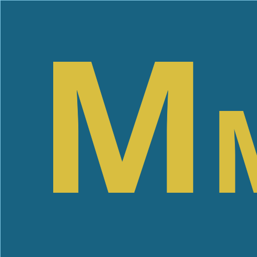

Hi, I'm Matúš Mandzák, a future university student set to embark on an exciting journey. My roots trace back to
the vibrant city of Košice in Slovakia, where I was born and raised. Nestled on the eastern side of the country,
Košice holds a special place in my heart.
My journey into the realms of cybersecurity and programming took shape in 2019 when I delved into the world of
Python. Over the years, I've honed my coding skills not only in Python but also in C, JavaScript, and even
delved into the intricacies of assembly language. Programming has become a passion, an avenue through which I
explore the intricate dance of code and logic at both high and low levels.
As I prepare to transition into university life, my interest in cybersecurity has become a driving force since
2023. It's more than a field of study; it's a realm where I find excitement in unraveling the complexities of
systems, discovering vulnerabilities, and applying my knowledge of reverse engineering and binary
exploitation—skills I've cultivated through programs like pwn.college provided by Arizona State University.
In my free time, you'll often find me engaged in sports, particularly volleyball. The thrill of competition and
the pursuit of personal excellence drive me on the court, just as the challenge of solving programming puzzles
propels me in the digital arena.
As I prepare to take the next step in my academic journey, I'm eager to combine my interests in cybersecurity,
programming, assembly language, basic reverse engineering, binary exploitation, and volleyball. The challenges
ahead are exciting, and I can't wait to see how the blend of technology, coding, low-level understanding,
cybersecurity skills, and athletic pursuits shapes the narrative of my university experience.
- written with use of ChatGPT-3